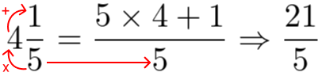

1º Trimestre
2º Trimestre
3º Trimestre


Noção de conjuntos:
Há quatro noções importantes:
- Conjunto
- Elemento
- Pertinência entre elemento e conjunto
- Inclusão e igualdade entre conjuntos
Um conjunto é um agrupamento de algo, cada membro do conjunto é chamado de elemento.
Podemos definir um conjunto descrevendo seus elementos ou citando seus elementos:
Descrevendo: {x | x é um número par negativo}
Citando os elementos: A = {-2, -4, -6, -8, -10, -12, ...}
Descrevendo: {x | x é um múltiplo de 3 e 0 ≤ x ≤ 330}
Citando: F = {0, 3, 6, 9, 12, ..., 330}
Sendo a letra maiúscula antes do conjunto, o nome do conjunto, o nome que representa um conjunto pode ser representado por qualquer símbolo ou letra.
As reticências no final de um conjunto indicam que ele é infinito, as reticências no meio de um conjunto indicam que ele possui muitos elementos no meio dele antes do último.
Para estabelecer relações de pertencimento, utilizamos elementos e conjuntos.
Normalmente letras maiúsculas são utilizadas para representar conjuntos, e letras minúsculas são normalmente utilizadas para representar seus elementos.
Há dois símbolos para representar pertencimento ou não pertencimento:
Pertence -> ∈
Não pertence -> ∉
Por exemplo, para dizermos que o número 3 pertence ao conjunto C, escrevemos: 3 ∈ C, e para dizermos que 3 não pertence ao conjunto C, escrevemos: 3 ∉ C
Um conjunto também pode ser representado por linhas, formas, círculos, etc:
Imagem retirada de: http://matematicaabelortega.blogspot.com/2013/07/diferencia-de-conjuntos.html
Um conjunto unitário é quando um conjunto possui apenas um elemento, um conjunto vazio é quando um conjunto não possui nenhum elemento, e é representado por duas chaves vazias { } ou um zero cortado ∅
Exemplo: {x | é ímpar e múltiplo de 10} : { } ou ∅
Quando dois conjuntos possuem os mesmos elementos, são conjuntos iguais.
Um subconjunto é quando todos os elementos de um conjunto também estão dentro de outro:
Imagem retirada de: https://www.freepng.es/png-cxvnc8/
Neste exemplo, todos os elementos do conjunto A estão dentro do conjunto B, para descrever isso utilizamos os símbolos:
Está contido -> ⊂
Contém -> ⊃
Se A = {1, 9, 11} e B = {1, 4, 8, 9, 11}, então B ⊃ A (B contém A) e A ⊂ B (A está contido em B)
Conjuntos numéricos:
Os diferentes tipos de números podem ser agrupados em 6 diferentes conjuntos numéricos:
Imagem retirada de: https://www.matematicadidatica.com.br/ConjuntoNumerosComplexos.aspx
Números naturais (ℕ):
Representado por: ℕ = {0, 1, 2, 3, 4, 5, 6, 7, 8, 9, ...}
É um conjunto infinito, podendo também possuir alguns subconjuntos:
I = {1, 3, 5, 7, 9, ...} Esse é um subconjunto de ℕ, possuindo apenas os números ímpares.
ℕ* é um subconjunto de ℕ também, ele representa todos os números de ℕ, com exceção do 0 ou seja:
ℕ* = ℕ - {0} = {1, 2, 3, 4, ...}
Ou seja: ℕ* ⊂ ℕ e I ⊂ ℕ
Números inteiros (ℤ):
Representado por: ℤ = {..., -3, -2, -1, 0, 1, 2, 3, ...}
ℕ é subconjunto de ℤ: (ℕ ⊂ ℤ)
Imagem retirada de: https://oblogdolucascardozo.blogspot.com/2020/04/numeros-inteiros.html
ℤ* = ℤ - {0}
ℤ* ⊂ ℤ
Podemos ainda representar os inteiros não negativos, ou seja, apenas os números positivos, da seguinte forma: ℤ+
Ou representar apenas os números negativos dos inteiros: ℤ-
Também podemos misturar esses sinais com o *, formando o conjunto de números inteiros positivos menos o zero (ℤ*+) ou o conjunto de números inteiros negativos menos o zero (ℤ*-)
Esses conjuntos são subconjuntos de ℤ
Simétrico e oposto:
O oposto, ou simétrico de um número é ele mesmo com seu sinal invertido, por exemplo, o oposto de 7 é -7 e o oposto de -4 é 4
A adição de dois números opostos sempre resultará em zero: 2 + (-2) = 0
Nas operações em ℤ, há algumas regras de sinais:
Adição e subtração:
Sinais iguais -> se soma e mantém o mesmo sinal
Sinais diferentes -> se subtrai e mantém o sinal do número de maior módulo
Multiplicação e divisão:
Sinais iguais -> positivo
Sinais diferentes -> negativo
Há operações de divisão em ℤ que resultam em um número que pertence a outro conjunto, os números com vírgula, como por exemplo: 5 / 2 = 2,5
Números racionais (ℚ):
Representado por: ℚ = {x | x = a/b, com a ∈ ℤ, b ∈ ℤ e b ≠ 0}
Ou seja: o conjunto dos números racionais é formado por todos os números que possam ser escritos em formato de fração (a/b), sendo o numerador e o denominador pertencentes ao conjunto dos inteiros e denominador diferente de zero
Uma fração com denominador 1 ou uma fração cujo numerador é múltiplo do denominador, é um número inteiro, sendo assim: ℕ ⊂ ℤ ⊂ ℚ
Entre dois números inteiros, há infinitos números racionais
Números decimais são uma forma de representar números fracionados
Quando as casas de um número decimal são infinitas e possuem um padrão, chamamos isso de dízima periódica, por exemplo: 4,333... é uma dízima periódica, pois o número 3 se repete infinitamente
Também podemos transformar frações em números decimais, as vezes obtendo um número decimal com casas finitas e às vezes com casas infinitas (dízima periódica)
Por exemplo: A fração 10/4 ao dividirmos o numerador pelo denominador, obtemos 2,5
Porém na fração 1/3, ao dividirmos obtemos 0,333... , um número infinito
Transformar decimais em fração:
Para decimais finitos contamos as casas depois da vírgula, por exemplo, o número 1,47 possui 2 casas depois da vírgula, para transformar esse número em fração, primeiro removemos a vírgula, transformando 1,47 em 147, o 147 será o numerador, o denominador será o número 1 seguido de uma certa quantidade de zeros, essa quantidade é definida pela quantidade de casas depois da vírgula, nesse caso, 2 zeros, ou seja, o decimal 1,47 seria 147/100, o decimal 4,587 seria 4587/1000, o decimal 0,058 seria 58/1000, e assim por diante
Para transformar dízimas periódicas (decimais infinitos) em frações utilizamos outro método
Caso seja uma dízima periódica simples, o numerador será os dígitos de um período da dízima, e o denominador será determinado por uma certa quantidade de noves, essa quantidade é determinada pela quantidade de dígitos em um único período da dízima:
Por exemplo, 0,333... será 3/9, 0,546... será 546/999, etc...
Para um dízima periódica composta, precisamos primeiramente colocar os números após a vírgula que não pertencem à dízima para fora da vírgula, fazemos isso multiplicando o número por 10, 100, 1000, etc...
Por exemplo, no número 4,07131313... , o número 07 está dentro da vírgula e não pertence à dízima, e como ele é um número de duas casas, multiplicamos o número inteiro por 100, transformando-o em 407,131313... , ignorando o número fora da vírgula e repetindo o processo da dízima simples, ficamos com o número 13/99, agora somamos esse número com o número que estava fora da vírgula e dividimos tudo pelo número utilizado na multiplicação inicial, nesse caso ficamos com:
(407 + 13/99)/100
Agora basta resolvermos essa conta e o resultado será a fração 4036/9900
Número misto:
Um número misto ocorre quando o numerador é maior do que o denominador (fração imprópria)
Por exemplo, a fração 7/5 pode ser representada como o número misto 1+2/5
A conversão é feita da seguinte forma:

Imagem retirada de: https://matematicabasica.net/fracao/
De misto para fração imprópria: O denominador não muda, e o numerador é a multiplicação entre o denominador e a parte inteira, mais o numerador
De fração imprópria para misto: Divide-se o numerador pelo denominador, o quociente será a parte inteira, o resto será o numerador, e o denominador não se altera
Números irracionais (𝕀):
Um número irracional é um número que não pode ser representado com os números racionais e inteiros, é um número infinito, onde diferente de uma dízima periódica, os decimais não possuem um padrão, não possuem uma repetição
Um dos números irracionais mais famosos é o pi, que se é obtido pela divisão do comprimento de um círculo pelo seu diâmetro, ele é um número infinito sem um padrão: 3,141592...
Números reais (ℝ):
É a união entre o conjunto racional e o conjunto irracional
Podemos preencher completamente uma reta numérica utilizando o conjunto dos reais, chamamos uma reta assim de reta real:
Imagem retirada de: https://materia8anolaralaranjo.blogspot.com/2016/01/os-numeros-reais-o-conjunto-dos-numeros.html
Com os números reais podemos estabelecer relações entre dois números utilizando certos símbolos:
Os símbolos <, ≤, > e ≥.
x < y = x menor do que y
x > y = x maior do que y
x ≤ y = x menor ou igual a y
x ≥ y = x maior ou igual a y
Números complexos (ℂ):
É um conjunto criado para números que não se encaixam no conjunto dos reais, como por exemplo:
Um número que elevado ao quadrado resulte em -1, como não existe um número assim, foi definida a unidade imaginária i, que representa a solução da raiz quadrada de -1, assim podemos encontrar um resultado para um número que elevado ao quadrado resulte em -1
S = {x ∈ ℂ | x = ±i}
Operações entre conjuntos:
União:
Quando queremos unir os elementos de dois dados conjuntos utilizamos o símbolo ∪, sendo assim:
Z = {4, 5, 6} Y = {1, 2, 3, 4}
Z ∪ Y = {1, 2, 3, 4, 5, 6}
Sendo assim: Z ∪ Y = {x | x ∈ Z ou x ∈ Y}
É possível unir conjuntos que tenham elementos em comum ou que não tenham
Intersecção:
Representada pelo símbolo ∩, uma intersecção entre dois conjuntos são os elementos que estão ao mesmo tempo nos dois conjuntos
Por exemplo: G = {4, 5, 6} H = {1, 2, 3, 4, 5}
G ∩ H = {4, 5}
Ou seja: G ∩ H = {x | x ∈ G e x ∈ H}
Caso dois conjuntos não possuam elementos em comum, a intersecção será um conjunto vazio:
T = {1, 2, 3} R = {4, 5, 6}
T ∩ R = { } ou T ∩ R = ∅
Diferença:
A diferença entre dois conjuntos se dá pelos elementos do primeiro conjunto que não pertencem ao segundo
Por exemplo, se J = {2, 3, 4, 5} K = {3, 4}
Então J - K = {2, 5}
Ou seja: J - K = {x | x ∈ J e x ∉ K}
Intervalos reais:
Os intervalos reais são intervalos numa reta real, eles podem ser representados pelo desenho de um gráfico ou de uma forma mais formal
Para determinar um intervalo num gráfico, temos que colocar pontos (bolinhas), caso sejam dois pontos, será um intervalo de um número x até um número y, caso o ponto esteja pintado então é um intervalo fechado, caso não esteja pintado é um intervalo aberto:
Imagem retirada de: https://reforcandomatematica.blogspot.com/2013/11/intervalos-reais.html
De uma forma mais formal, caso um intervalo F esteja aberto à esquerda e um intervalo G esteja fechado à direita, isso poderia ser representado por
(F, G] ou ]F, G] ou {x ∈ ℝ | F < x ≤ G}
Os símbolos de (, ), colchetes invertido, "menor que" e "maior que", representam intervalos abertos, já os símbolos de colchetes, "menor ou igual a" e "maior ou igual a" representam intervalos fechados
Caso numa reta real haja apenas um ponto, será um intervalo real de um certo número até o infinito, seja um infinito positivo ou negativo
Imagem retirada de: https://deverdecasa-web.blogspot.com/2016/08/intervalos-reais.html
O lado infinito sempre será um intervalo aberto
Uma reta sem nenhum ponto é uma reta real